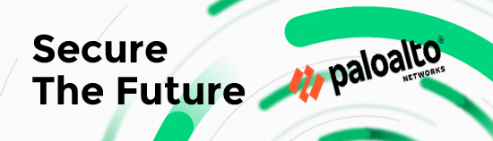

PANW's Secure the Future Competition
This academic competition is designed to challenge student candidates how to make decisions regarding protection of operational assets through the analysis, comparison, and selection of advanced security tools, methodologies, and implementation options. Additionally, student candidates will research and develop a competition report, summary video, and presentation that at a minimum will include methodologies for deploying end-to-end attack detection, alert triage, threat hunting, investigation, orchestration, and automated response activities.
In September of 2021, I was formally invited by Palo Alto Networks to compete in their Secure the Future competition for 2021-2022. Although I was initially hesitant to join the competition due to its unusual format in comparison to other security competitions (e.g Capture-the-flag, CCDC), the topics that this competition covered were interesting to me. As a sophomore at the time, I was eager to learn anything I could related to cybersecurity and signed up for the competition.
Phase 1 - 2
Phase 1 was more geared toward pre-competition requirements. I had to take a networking pre-test in order to qualify to compete in the actual competition. Conveniently, I completed my CompTIA Network+ certification earlier that summer and was confident in my fundamental networking concepts. I also took several networking courses during previous year at University, so, I entered into the pre-exam well prepared. I was glad things worked out this way, since the minimum one could get to pass the exam was an 80%. Thankfully, I finished with a low A on the exam.
Phase 2 introduced the bulk of the research period of the competition. It also acted as the first round that knocked participants out. We were tasked with researching interesting cybersecurity concepts that currently indicate some relevance in the near future. Some of these concepts included: AI/ML, Threat Intel, Data Islands/Perimeter, and DevSecOps.
We were also able to pick a particular industry to research these concepts in. The primary topics we were able to choose from were: Finance, Healthcare, and Energy. I decided to go with Finance since I have a lot of family members in that field and would be able to reach out if I had any questions regarding the sector's current state. Further, I was interested in looking in particular at how cryptocurrency might affect the future of security within the Finance industry. Not only was there an incredibly large prevalence at the time with Coinbase being one of the most popular apps on the Play Store/App Store, but also with cryptocurrency's role in recent financial crimes.
During my research, I noticed a very interesting trend when analyzing the history of major cyber attacks in the financial industry: majority of the last several attacks noted were all related to cryptocurrency in some way shape or form. This further peaked my interest in this topic as I began to look more and more into the industry with the other security topics mentioned. This phase lasted up until late November, where the top candidates were chosen to move onto Phase 3. Candidates were chosen by those who received consistently high grades on each research submission for every topic. Questions dived into the intricacies of each topic as well.
Phase 3
Fortunately, I was chosen as a top candidate. Things in the competition ramped up quite rapidly for this phase. Competitors were tasked with writing a six page report addressing each and every topic learned. This included an executive summary, qualities of all the sections of work, and a conclusion bringing all our findings together. This also had to be followed with a five minute video presentation addressing topics we covered in our reports.
The hardest part about this phase was condensing my paper into 6 pages. After my first full draft of writing, I ended up with around 10 pages of content. This phase really challenged me in figuring out the core take-away information from my research over the last few months since I had to exclude a lot of details. It was tough, but I ended shortening up a lot of my essay in around a week. I was fortunate enough to have this phase during my winter break for the most part. The video aspect of the assignment was also fun breather after finishing the research paper, since I was able to elaborate a lot more with some of my findings during the research phase. Though this phase went a little into my second quarter, I was able to finish both assignments receiving a grade sufficient enough to move further into the competition.
Phase 4
In this phase, competitors were eliminated up until there were only 10 contestants left in accordance with grades received from the previous assignments. At this stage, we were all offered interviews for positions at PANW, which was exciting to hear. But, this phase would select who would win a $10,000, $5,000, and $2,500 cash prize for top contestants. Winner were selected base on a 10 minute presentation given to several judges from PANW. I did not end up placing among the top three candidates, but I was incredibly happy with the presentation I gave. I was surrounded by students who all shared an incredibly great passion for the field of security. Though I did not win, I was very inspired by my fellow competitors after giving their presentations. The top three candidates all deserved their reward and I'm happy to have been given this experience.
In terms of security in the Financial sector, my main take-away was that each and every financial institution has their own strengths and weaknesses in the current threat landscape that need to be addressed in their own particular ways. For example, credit unions disproportionately have more password attacks in comparison to stock exchange institutions. On the flip-side, these stock exchange institutions face way more denial of service attacks. It's all a matter of understanding where each institution falls short and investing in intelligence sharing among each of these institutions. Not all institutions are able to purchase top of the line machine learning software to defend their networks. Further, adversaries are continuing to develop and sophisticate their methods of attacking, harming smaller businesses as a result. These efforts of investing in threat intelligence will ultimately contribute to a safer world for the future of cybersecurity.
Thank you again to PANW for the amazing competition. I encourage all undergraduate cybersecurity students to participate in this competition as it rolls around every year. Though this competition requires a huge commitment outside of the classroom, I believe that it was very much worth it in building the start of my cybersecurity career.
Mike F